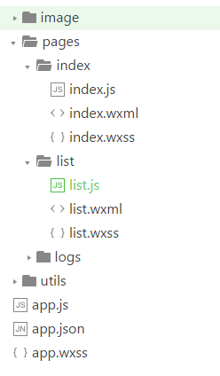

喵~
微信小程序是一种不需要下载安装即可使用的应用，它实现了应用“触手可及”的梦想，用户扫一扫或搜一下即可打开应用。用完即走，适合场景化的问题。
微信推了小程序之后大家对它的关注度一直很高。所以就和朋神默默的写了个demo…
10月底写的小程序…现在11月都快过完了才写博客2333(:зゝ∠)……..

考虑了一下小程序用完即走的定位，我们做的这个东西功能十分的简单明确，就是用来进行活动的查看和签到，通过微信提供的位置的api获取坐标进行位置的判断。
因为功能比较简单所以就没有用脚手架….
结构

整个项目的结构大概如图，小程序结构还是比较清晰&好理解的，.js脚本文件，.json配置文件，.wxss样式表文件
app.json 是对整个小程序的全局配置,可以配置有你的项目哪些页面，tabBar，导航条，网络超时时间等。
app.js是小程序逻辑。在app.js里用App() 函数用来注册一个小程序。指定小程序的生命周期函数等。
tips：
pages里的四个文件必须具有相同的路径与文件名。只能配置最少2个、最多5个 tab 。
WXML
有以下几个功能，感觉跟vue差不多- -….文档写的挺清楚的….没什么好讲的地方…
数据绑定、列表渲染、条件渲染、模板、事件、引用
WXSS
跟CSS几乎是一样，多扩展了两个特性，
rpx（responsive pixel）: 可以根据屏幕宽度进行自适应。
rem（root em）: 规定屏幕宽度为20rem；1rem = (750/20)rpx 。
使用@import语句可以导入外联样式表，@import后跟需要导入的外联样式表的相对路径。
活动的排序
获取活动的数据，活动有三种状态，正在进行，即将开始，已结束。要令正在进行的活动排在活动列表的最前面，然后按照活动的开始时间进行排序。
1 2 3 4 5 6 7 8 9 10 11 12 13 14 15 16 17 18 19 20 21 22 23 24 25 26 27 28
| wx.request({ url, success: resp => { const now = new Date() const a = resp.data.data.map(i => { i.start = new Date(i.start) i.end = new Date(i.end) return i }) console.log("resp",resp) const cmp = (a, b) => b.start - a.start const coming = a.filter(i => i.start > now).sort(cmp).map(i => (i.statu = 0,i)) const ing = a.filter(i => i.start < now && i.end > now).sort(cmp).map(i => (i.statu = 1,i)) const end = a.filter(i => i.end < now).sort(cmp).map(i => (i.statu = 2,i)) const items = [...ing, ...coming, ...end].map(i => { i.img = u + i.img i.time = util.formatTime(i.start) return i }) if (items.length) { this.setData({ items:that.data.items.concat(items), loading: true }); } else { this.setData({ hasMore: false, loading: false }); } }, fail: e => console.log(e) })
|
活动列表的下拉加载遇到了一点坑。。
在wxml的代码里，需要对scroll-view给定一个固定的height，不然他不会有加载的效果，为了适配不同的分辨率，通过wx.getSystemInfo获取用户的窗口高度进行数据绑定。（WXML 中的动态数据均来自对应 Page 的 data）
1 2 3 4 5 6 7 8 9 10 11 12 13 14 15 16 17 18 19 20
| <view class="container"> <scroll-view scroll-y="true" style="height:{{windowH}}px" class="list" bindscrolltolower="handleLoadMore" > <view class="wrap"> <view class="activity-box" wx:for="{{items}}" wx:key="_id"> <image src="{{ item.img }}" class="img {{ item.statu !== 1 ? 'mask' : '' }} {{ item.statu === 0 ? 'coming' : '' }} {{ item.statu === 2 ? 'end' : '' }}"></image> <text class="block">{{ item.title }}</text> <text class="block time">{{ item.time }}</text> </view> </view> <view class="tips"> <view wx:if="{{ hasMore }}"> <image src="../../image/loading.gif" mode="aspectFill"/> <text>努力加载中_(:зゝ∠)_</text> </view> <view wx:else> <text>没有更多内容了</text> </view> </view> </scroll-view> </view>
|
总而言之，跟vue有一点点像。。&朋神一直在吐槽小程序的api很蠢。。。(:зゝ∠)….